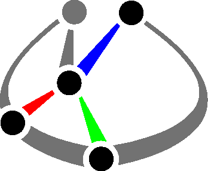

spatial-casadi

This package implements various data structures and helper methods for manipulating spatial transformations using CasADi variables in Python. The library interface is partially based on the Scipy spatial module.
- Code: https://github.com/cmower/spatial-casadi
- Documentation: https://cmower.github.io/spatial-casadi/
- PyPI: https://pypi.org/project/spatial-casadi
- Issues: https://github.com/cmower/spatial-casadi/issues
Examples
There are three main data structures: Rotation, Translation, and Transformation. The following showcases some of the main functionality of the library.
Install
From PyPI
From source
In a new terminal:
- Clone repository:
- (ssh)
$ git clone git@github.com:cmower/spatial-casadi.git, or - (https)
$ git clone https://github.com/cmower/spatial-casadi.git
- (ssh)
- Change directory:
$ cd spatial-casadi - Ensure
pipis up-to-date:$ python -m pip install --upgrade pip
- Install from source:
- (main library)
$ pip install . - (when you want to also run the test scripts)
$ pip install .[test]
- (main library)
Running the test scripts
- Install
spatial-casadifrom source and ensure you install thetestpackages (see previous section). - Change directory:
$ cd /path/to/spatial-casadi - Run tests:
pytest
Build documentation
The documentation is hosted here. However, if you want to build it yourself, then follow these steps.
In a new terminal:
- Clone repository:
- (ssh)
$ git clone git@github.com:cmower/spatial-casadi.git, or - (https)
$ git clone https://github.com/cmower/spatial-casadi.git
- (ssh)
- Change directory:
$ cd spatial-casadi/doc - Install doxygen:
$ sudo apt install doxygen - Build documentation:
$ doxygen - View documentation:
- In a browser, open
html/index.html - Build pdf (requires LaTeX)
$ cd latex$ make- Open the file called
refman.pdf
- In a browser, open
Citing
If you use spatial-casadi in your work, please consider citing the following.
Contributing
If you have any issues with the library, or find inaccuracies in the documentation please raise an issue. I am happy to consider new features if you fork the library and submit a pull request.